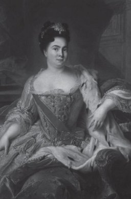

III. Ahmet Rusya’ya harp ilan eder etmez harp hazırlıklarına başlamış, Prut Ordusu kumandanlığına Baltacı Mehmet Paşa’yı tayin etmişti. Baltacı Mehmet Paşa siyasi işlerde hiç maharete sahip değildi. Hatta ordunun sevk ve idaresine memur olduğu zaman kendi de aczini itiraf etmiş, gençliğinden beri takip ettiği mesleğin böyle büyük işleri başarmaya yetmeyeceğini söylemişti.[33] Fakat III. Ahmet’in ısrarı üzerine çaresiz kalarak kabul etmiş, Rusya’ya karşı hareket için ordunun hazırlıklarıyla meşgul olmaya başlamıştı.
III. Ahmet Rusya seferine büyük önem veriyordu. Seferin iyi şekilde yürütülmesini temin edecek her türlü sebebe yapışıyor, hazinenin açığını kapatmak için valilere emirler yazıyordu. O zamanlar bir harp çıktığı zaman valilerin harp yardımında bulunması usul gereğiydi. Her valiye bir hüküm yazılır, Devlet hazinesine ne kadar para göndermesi gerektiği emir olunurdu.
III. Ahmet bir taraftan ordunun lojistik desteğini tamamlamak için para tedarikiyle meşgul oluyor, diğer taraftan bütün valilere ilkbaharda hayırlı, uğurlu iş olarak yapılacak sefer-i hümayun için cenk ve harbe yarar tam silahlı ve zengin halk ve süvarilerin Rumeli eyaletinin hep birlikte zeamet ve tımar erbabı ve alay beyleriyle toplanma gününde toplanmaları emir olunuyordu. Bu emirlerin her birinde bütün valilerin getirecekleri verginin miktarı açıklanıyor, Anadolu’dan gelecek valilerin Edirne’de, Rumeli’den gelecek valilerin Isakçı Merasında toplanmaları kesin bir şekilde beyan ediliyordu. Sonra bütün emirler özel defterine kaydediliyor, hangi valilere yazıldığı aşağıda açıklanıyordu.
III. Ahmet yalnız ordunun maddi ihtiyaçlarını tamamlamakla meşgul olmuyor, Ordunun hareketlerine etki edecek manevi sebepleri de, kendisine has, saf bir gönül tevekkülüyle icra ediyordu. Bu icraatın en mühimi Kırım Hanı’nın yalan dolanları neticesi olarak Ozi Valisi Yusuf Paşa’yı azletmesi idi. Yusuf Paşa tam yirmi sene Ozi Valiliğinde bulunmuş, sınırların muhafazasında büyük bir üstün zekâ örneği göstermişti. Şimdi bu hizmetinin mükâfatı olarak sırf Kırım Hanı’nın düşmanlığı, kendisinin 12. Şarl ile münasebetini çekememesi yüzünden kendisi Kılberun’da hapis ediliyor, bütün malları ve eşyaları hükümet namına haciz ediliyordu.[34]
Yine bu sırada Maraş Beylerbeyi devletin bu müşkül kararlarından istifade ederek isyana kalkışıyor, III. Ahmet bu isyanı da yatıştırmaya muvaffak oluyordu.
III. Ahmet Prut Seferi’nin yapılması için gereken tedbirleri ele aldığı sırada Anadolu ve Rumeli’nde de sefer hazırlıkları görülüyor, Edirne ve İsakçı’da yapılacak toplanmalar için büyük bir faaliyet gözleniyordu.
Petro harp ilanını haber aldığı zaman hiç şaşırmamıştı. Petro, Bizans imparatorlarına halef olmak için öteden beri takip ettiği yolda zaten devam edecek Osmanlılarla mutlaka bir savaş yapacaktı. Fakat Petro bu harbi muntazam, hazırlıklı ve kesin olarak yapmak istiyordu. Şimdi ise bu hazırlıklara meydan bulamadan yapmaya mecbur olmuştu. Petro Osmanlılara karşı harp etmek için kuvvetinin kâfi olmadığını anlıyordu. Askerin esaslı bir teşkilata sahip olmaması onu daha evvel 12. Şarl’a karşı da epeyce uğraştırmıştı. Bunun için Balkanlarda, asıl Osmanlı toprağında müttefikler bulmak, gelecek siyasetine maddi sebepler ve zeminler hazırlamak lazım geliyordu. Petro bu maksadın meydana gelmesine en çok Boğdan Voyvodası Ganıta Mir’i uygun bulmuştu. Ganıta Mir esasen Osmanlılar sayesinde yetişmiş, o sayede yükselmiş olduğu halde Osmanlılara karşı yine daima kin ve düşmanlıkla dolu bir kalbe sahipti. Kırım Hanı’nın tavsiyesiyle Boğdan Voyvodalığına tayin olunan bu zat, voyvoda olduğu günün ertesinde Çar’dan, daha çok bir lütuf göreceğini umarak, Osmanlılara ihanette bulunmuştu.[35] Kantemir, Petro’nun 12. Şarl’a karşı üstün gelmesinden sonra ömründe hiç harp etmeyen Baltacı gibi bir vezire mutlaka galip geleceğine inanıyor, Rum Patriği’nden gördüğü teşvikten büsbütün cüret alarak Osmanlı mülkündeki Rumların da kendisine katılacaklarını düşünüyordu. Petro, Kantemir’in bu düşünce durumundan faydalanmak için kendisiyle derhal gizli bir anlaşma akdetmişti. (13 Nisan 1711)
Bu anlaşma gereğince Boğdan Rusya’nın himayesi altında bir prenslik teşkil edecek, Kantemir ile halefleri hayat boyu şartıyla bu eyaleti idare edeceklerdi. Boğdan Prensi de buna karşılık Çar’a 10.000 kişilik bir imdat kuvveti hazırlayacak, bu askeri gücün maaşı Büyük Petro tarafından karşılanacaktı. Petro bununla da yetinmemiş, Avrupa devletlerine gönderdiği bir notada, haleflerinin Osmanlılara karşı birkaç asırdır takip ettikleri siyaseti, Şark Meselesi’nin en mühim kısmını teşkil eden din siyaseti takip ederek, Rumların, Ulahların, Bulgarların ve Sırpların Osmanlılar tarafından eza ve cefa gördüklerinden şikâyet etmişti. Sonra Karadağ’a delege olarak Mılordaviç’i göndermiş, kendisinin Ortodoks Hıristiyanları Osmanlı hâkimiyetinden kurtarmak için harbe girişeceğini, herkes görevini iyi şekilde yerine getirirse vahşi Müslümanların Arabistan çöllerine kadar kovulacağını[36] yazmıştı. Petro Karadağ’a bu haberleri gönderdiği gibi Makedonya ve Hersek Sırplarını da elde etmeye çalışmıştı.
Petro’nun bu hareketi, Osmanlı mülklerindeki Hıristiyanları himaye için Rusya Çar ve Çariçelerinin takip ettikleri yol, Osmanlıları senelerce zayıf düşüren müdahale siyasetinin bir başlangıcı idi. Artık Petro’nun birçok memurları Romanya’da dolaşıyor, Rusların Hıristiyanlara karşı beyannamelerini dağıtıyor, bu bildirilerde Tuna Eyaletlerindeki ahalinin din hürriyetine kavuşacakları, Osmanlı hâkimiyetinden ebediyen kurtulacakları açıklanıyordu. Hatta bu gizli planların başlıca kışkırtıcısı olan Kudüs piskoposlarından biri Kostantiniyye’nin bir mezarı üzerinde bir yazı keşfettiğini, bu yazıda Türklerin Avrupa’dan sarı bir kavim tarafından kovulacağı beyan olunduğunu ilk defa olarak icat ediyordu. Fakat bu hilelerden iftiralardan hiçbir kazanç elde edilmiyordu.[37] Petro gerçekten Boğdan Prensi Kantemir’e kati surette güveniyor, fakat Boğdan ahalisinin Kantemir ’e tabi olmadığını biliyordu.
Boğdan ahalisi, büyüklerden başka kimseye zararı dokunmayan haraç verici kavimlere karşı halim ve yumuşak davranan, Osmanlı hâkimiyetinden memnun oluyorlar, Hıristiyanlardan ve en çok da kendilerine karşı insaniyetsizce davranmış olan Ruslardan şikâyetçi idiler.[38]
Rusların Balkanlarda bu başarısızlıkları meydana geldiği sırada, Osmanlı ülkesinde büyük askeri faaliyet hüküm sürüyordu. İstanbul’da Rusya sefiri rehin olarak Yedikule’de muhafaza edildiği sırada yeniden 30.000 yeniçeri, 1.000 Cebeci, 7.000 Topçu ve 3.000 Mısır askeri kaydoluyor, erzak ve zahirenin Selanik, Kavala ve Enoz iskelelerinden alınması için emirler yazılıyor, Kili iskelesine çıkarılmak üzere Karadeniz yoluyla 300 Şahi ve Tarbozen, 20 havan topu, 45 kayalık mermer gülle atar iri Şayika toplarıyla birçok balyemez ve kolonboronalar sevk ediliyordu.[39]. Prut Seferi’nde ordu ile donanmanın koordineli harekâtına fevkalade dikkat ediliyordu. Kapıkulu efradı Davutpaşa Ordugâhı’nda toplandıkları sırada, kapıdan İbrahim Hoca maiyetinde 80 kalyondan meydana gelen bir kuvvet Akdeniz muhafazasına gönderiliyor, Kaptan-ı Derya Mehmet Paşa maiyetinde de Azak Kalesi’nin alınması için Karadeniz’e bir deniz kuvveti gönderiliyordu.[40]
Donanma mürettebatı bu şekilde ikmal olunduğu gibi teçhizatı vesairesi de az bir zaman içinde tamamlanmış, hatta donanmaya 12. Şarl’ın maiyeti erkânından birkaç İsveç generali de katılmıştı.[41]
Prut Seferi’ni yapacak her iki ordu da intizamdan mahrumdu. Biri henüz acemiliğe mahsus düzensizlikler, diğeri devri yaşlılık dönemine has hastalıklarla düşmüştü. Osmanlı ordusu Mercidabık, Ridaniye zaferlerini kazanan, Mohaç’ta harika zaferler ortaya koyan, gençlik güç kuvvet dolu, itaatli ve fedakâr Osmanlı ordusu değildi. Ordunun düzeninin esası bu mühim kuvvetin önemini muhafaza etmeyi takdir edemeyen padişahlar tarafından ihlal edilmiş, yeniçeri ocağına (ağa çırağı v.s.) adlarıyla hariçten bir takım fertler kaydırılmış, ocağın bağları ve düzeni bozulmuştu. 730’dan III. Murat zamanına kadar uzun bir intizam devresi esnasında bütün inzibatını koruyan bu ordu, III. Murat devrinden itibaren eski disiplinini kaybetmiş, isyanlar ve cinayetler birbirini takip etmişti. Orduya artık birçok kişi dâhil oluyor, adam kayırma ve rüşvetin fevkalade tesiri oluyordu. Ordu askeri talim ve terbiyeden mahrum, askerliği geçim kaynağı edinmiş kimselerle dolduğu için seferlerde hiçbir başarı kazanamıyor, o zamana kadar civarındaki hükümetlere karşı muhafaza ettiği üstünlüğü kaybetmiş bulunuyordu. Bununla beraber Osmanlı ordusu saflarında hiçbir vakit eksik olmayan yaratılıştan gelen cesaret, kendine güven, erkeklik gururu ordunun başarısını bir müddet kadar uzatmaya dayanak olabiliyordu. Fakat Osmanlıların harp usulünü, zayıf noktalarını ve disiplinsizliğini incelemiş olan Avusturya orduları karşısında bu dirençten kesin bir netice alamıyordu.
Petro ile sefere başlandığı zaman, Osmanlı Ordusu Viyana, Zeneta ve Salangamı’da bozulan Osmanlı Ordusu idi. Fakat tarihi gelenekler, askeri alışkanlıklar bu orduyu yine yaşatıyor, zayıf düşmanlara karşı yine başarılı kılıyordu.
Osmanlı ordusunda bu gibi eksikler mevcut olduğu halde Rus ordusu da henüz teşkil edilmiş bulunuyordu. Petro, evvela orduya aldığı fertleri hayat boyu asker olma şartıyla almış, orduyu milletten büsbütün ayrı bir sınıf haline koymuştu. Narova Muhasarası’nda düştüğü felaket üzerine, Petro ordunun manevi unsurlarına da önem vermiş, o tarihten itibaren neferin ruh ve kalbini terbiye etmeye çalışmıştı. Fakat Rus milletinde öyle bir takım kökleşmiş eksikler vardı ki, Petro bunları yine yok edemiyordu. İdare işleri de ahlaksızlık, emir ve komutada yetersizlik olunca görüntüleriyle idare etme durumunda kalıyordu. Petro’dan evvelki Rusya, harbe alışkın değildi. Petro ise Rusları aynı zamanda medeni ve cengâver bir millet haline getirmeğe çalışıyor, fakat Osmanlılarla harbe giriştiği zaman bu girişiminin ilk devrelerinde bulunuyordu.[42]
Bu sırada İstanbul’da gerçekten büyük bir faaliyet hüküm sürüyordu.
Baltacı huzura kabul ediliyor, kendisine padişah tarafından iki hıl’at (süslü elbise, kaftan) giydiriliyor, ortasına da bir mücevher kılınç ve bir mücevher tirkeşbend[43] (Ok çantası) ihsan buyruluyor, Kılavisine de iki mücevher sorguç takılıyordu. Şeyhülislam Efendiye de beyaz çokaya kaplı bir samur kürk ihsan edilmişti. Bu esnada Mısır askeriyle Anadolu’nun sağ kolu piyade ve süvari askeri Çardak’tan Gelibolu’ya askerin kalan kısmı da Üsküdar’dan Beşiktaş’a geçiyor, hassa ordusu da Davutpaşa kışlasından Edirne’ye doğru hareket ediyordu.
Baltacı Mehmet Paşa Edirne’de ordunun yürüyüş nizamını tertip ettiği zaman sipahilerle silahtarları öncü kuvvete vermişti. Sonra yeniçerilerle beraber kubbe vezirleri vesair vezirler ve beylerbeyiler kendi askerleri ile beraber geliyor, yük arabaları ile yük beygirleri ve ağırlıklar ordunun gerisinde uzun bir kafile teşkil ediyordu. Ordu İsakçı Kartal yoluyla Falçi’ya geldiği zaman, Büyük Petro’ya ordunun hareketleri konusunda öne geçmiş oluyordu. Bu esnada Petro maiyeti efradından 20.000 kişiyi Şermitof Şermetiyef komutasında cebri yürüyüşlerle Aşağı Tuna’ya göndermiş, kendisi de ikinci eşi Katerina (Marit) ve daha diğer kadınlarla beraber ordunun büyük kısmı ile hareket etmişti. Petro’nun Şermetiyef’i cebri yürüyüşlerle sevk etmekten maksadı Osmanlıların Tuna’yı geçmelerine ve Tuna’daki Hıristiyanların oturduğu araziye girmelerine mani olmaktı. Fakat Ruslar Yaş’a girdikleri zaman erzak yönünden fevkalade sıkıntı çekmişlerdi. Haziranın yirmi birinci günü Petro da Yaş’a gelmiş, Moldova Voyvodası Kantemir tarafından samimiyetle karşılanmıştı. Fakat Ulah Voyvodası ile Mildova Voyvodası arasında var olan husumet Petro’nun kendilerinden istifade etmesine mani olmuştu. Romanyalılar ikiyüzlü hareket etmişler, diğer topluluklar da Osmanlılar tarafını tutmuştu. Hatta Ulah Bey’i açıktan açığa Osmanlı tabiiyetinde bulunduğunu ispat etmiş, hemen 20.000 kişiye yakın bir kuvvetle Petro’nun hareketine mani olmuştu. Bunun üzerine Petro her türlü imdattan, yardımdan bütünüyle mahrum durumda kalmıştı.
Rus ordusu bu engellerle endişeli bulunduğu sırada Baltacı Mehmet Paşa Petro’nun Prut Nehri’nden geçtiğini, Falçi’de ordugâh kurduğunu, hatta General Şermetiyef’in nehir geçitlerini muhafaza ettiğini haber almıştı. Bu sırada Kırım Hanı da yetişmiş, on bin Tatar askeri de atlarını nehre salarak geçmişlerdi. Hatta geceleyin tam bir faaliyetle dört köprü inşa edilmiş, bütün Osmanlı Ordusu karşı sahile geçmişti. Bu sırada, Petro ordusunun işgal eylediği mevki pek tehlikeli idi. Falçi ovası gayet batak ve sazlık bir yer olmakla beraber etrafındaki dağların da hâkimiyeti altında idi. Osmanlılar bu dağları işgal ettikleri takdirde Rus ordusu, arkasında Prut Nehri ve karşısında da Osmanlı askeri olmak üzere iki engel arasında kalacak, Ruslar için hiç kurtuluş çaresi mevcut olamayacaktı. Gerçekten bu tehlike tamamıyla ortaya çıkmış, iki gün geceli gündüzlü devam eden bir muharebe sonunda Büyük Petro Prut Nehrini geçen Tatar askeriyle arkadan, Baltacı Mehmet Paşa’nın komutasındaki ordu ile de cepheden kuşatılmıştı. Petro’nun, 140.000 kişiye ulaşan Osmanlı ordusuna karşı 60.000 kişilik bir ordu ile her türlü engele karşı koyamayacağı apaçıktı. Petro etrafını saran Osmanlı askerlerini gördüğü zaman ümitsiz ve mustarip, ne yapacağını şaşırmış,
— İşte şimdi kardeşim Şarl’ın, Poltava’da uğradığı felaketten daha büyük bir felakete düştüm, demişti.[44]
Bu sırada Demirbaş Şarl’ın yanında bulunan adamlarından Kont Borya Torodovski de bir kaç Polonyalı ve birkaç İsveçli ile beraber Baltacı Mehmet Paşa’nın yanında bulunuyor, hepsi de artık Rus ordusunun yıkılmış ve perişan olacağına kani oluyordu. Hatta Ponyatovski, Rus ordusunun felaketini Şarl’a haber vermiş, 12. Şarl, yanına kırk kadar subay alarak Çar’ın felaket ve yıkılmışlığını büyük bir sevinçle görmek için Bender’den hareket etmişti.
Rus ordusu tamamen kuşatma altına alınmıştı. Petro, etrafını saran Osmanlı askeri ortasında her türlü araçtan mahrum, elim geceler geçiriyordu. Petro, vatanını ihya etmek için, birçok felaketlere tahammül etmiş, fakat şimdi geleceğinin tamamen mahvolduğunu düşünmeye başlamıştı. İhtimal ki şimdiye kadar başladığı ve henüz tamamlayamadığı büyük işler, Rusya’ya devletler arasında şerefli bir mevki temin edecek tasavvurlar bir daha ikmal edilemeyecekti. Petro’nun ordusu da, hayatı da tehlikede idi. Rus Ordusu açlıktan telef olacaktı; çünkü aç ve ilaçsız askerler, atları ölmüş süvarilerle Osmanlıların yüz bini geçen ordularına karşı yapılacak bir hareket, pek ölüm - kalımlı olacak, Osmanlı ordusunun demirden saflarına karşı zayıf bir karşı koymada perişan bir eriyiş olacaktı. Petro, durumun ne derece zor olduğunu anlıyor, taç ve tahtından, geniş emellerden, vatanı için kurduğu planlardan bütün ümidini kesiyordu. Petro, Osmanlı safları arasından kaçınarak Moskova’ya gönderdiği mektupta[45] içine düştüğü durum ve perişanlık dolu halini tamamiyle tasvir ediyordu.
Petro, mektubuna şu şekilde başlıyordu: “İşte yanlış fikirlere kapılacak hiçbir günahım olmadığı halde orduma dört misli yüksek bir Osmanlı ordusu ile ordugâhımda kuşatılmış bulunuyorum. Cenab-ı Hak hiç ümit etmediğimiz bir zamanda imdadımıza yetişmeyecek olursa burada erzaktan tamamen mahrum olduğumuz için ya parça parça edilecek veyahut esir olacağız. Şayet Osmanlılar tarafından esir edilirsem artık beni çarınız ve senyörünüz saymayınız. Hatta benim yazım olduğunu bile anlasanız yine tarafımdan hiçbir emir beklemeyiniz. Kendim gelinceye kadar bekleyiniz. Şayet ben mahvolur ve gerçekten de vefat etmiş olduğumu duyarsanız, o zaman içinizden en liyakatlisini bana halef seçiniz...”
Petro, o sırada yirmi bir yaşında bulunan oğlunu çarlıktan düşürmek istiyordu.
Petro, son defa olarak ümitsizce çemberi yarma hareketine karar vermişti. Hatta akşamüzeri General Şermetiyef’i yanına çağırmış, ertesi sabah bir yarma hareketi icrasını emretmişti. Sonra, arabalarından ve ağırlıklarından Osmanlıların istifade etmemeleri için bunların da yakılmasını tavsiye etmişti. Petro bu emirleri verdikten sonra büyük bir karamsarlık ve ümitsizlik içinde çadırına çekilmiş, o gece hemen hemen hiç kimseyi yanına sokmamıştı.
Osmanlı Ordusunda zafer ve galibiyet hisleri içinde erkekçe bir sevinç hâkim olduğu sırada Petro’nun kuşatılmış ordusunda felaket, yıkım alametleri görülüyordu. Ağırlıklar ve arabalar insafsızca yakılıyor, herkes kıymetli eşyasını topraklara gömüyor, askerde ümitsizlik ve neşesizlik hâkim oluyordu. Bu sırada Rusların ordularıyla beraber getirdikleri kadınların feryadı kendilerine bir dereceye kadar teşvik vesilesi oluyor, herkes ertesi sabah vukua gelecek vuruşmayı bekliyordu. Fakat Petro ordusu bu çarpışmaya hiç lüzum görmemiş, Petro’nun dilber metresinin geniş düşünceli tedbirleri onları bu büyük felaketten kurtarmıştı. O gece Petro, çadırında umutsuz ve sıkıntılı bir şekilde düşünürken Petro’nun metresi Marit Katerina generallerle görüşmüş, bu görüşmeye pek ziyade ehemmiyet verilmişti. O sırada güzelliğinin çekiciliğine herkesi çeken zevcesiyle beraber Çar’ın maiyetinde bulunan Liyonlu Birazey o geceki görüşmeyi şu şekilde tasvir ediyor: “Katerina, General Yanus, General Barun Dasten ve Flamareşal, hususi bir konferans verdiler. Hepsi de yaralı olmaları dolayısıyla arabasından dışarı çıkmayan Baron Dalar’ın etrafına toplandılar. Orada generalin arabası ile Baron dostunun arabası arasında Madam Boş da hazır olduğu halde Flamareşal’in mütareke talebi için sadrazama bir mektup yazmasına karar verdiler.” [46]
Petro’yu esaretten, Rusya’yı yıkım ve felaketten kurtaran Marit Katerina Liyonyalı bir köylü kızı idi.
Marit’in babası belirsiz olduğu için mahallenin papazı terbiye etmiş, on dört yaşına geldikten sonra da Luter mezhebine bağlı papazlardan Guluk adında birine hizmetçilik etmişti. On sekiz yaşında İsveçli bir subayla evlenen Marit kocasının Ruslarla yapılan savaşta ölmesi üzerine Ruslar tarafından esir edilmiş, ondan sonra General Bauserek, Mareşal Sermetiyef’in ve daha sonra da Mençinof’un eline geçmişti. Nihayet Petro, Mençinof’un evinde verilen bir ziyafette Marit’in güzelliğinin cazibesine hemencecik vurulmuştu. O sırada eşini de boşamış olduğu için Marit’i kendisine metres edinmişti. (1707)
Petro metresinin zekâ ve fikirlerini daima takdir ettiği için o gece generallerle birlikte verdiği karar da uygun bulmuştu. Ertesi sabah Şafirof bir mektup yazarak Marit’e vermiş, Marit’te güzelliğinin çekiciliğine, anında hemencecik bağlayan sihirli benliğine güvenerek Baltacı’nın çadırına gelmişti. Marit, Baltacı’yı ricalar ve niyazlar, tebessümler ve gözyaşlarıyla ikna ederek anlaşmayı imza etmeye razı ettikten sonra[47] bütün mücevherlerini ve servetini toplamış, hatta zabitlerinden de ödünç para alarak bu kıymetli hediyeyi Baltacı’nın kethüdası Osman Ağa’ya Petro’nun bir mektubu ile beraber göndermişti.
Baltacı bu çok değerli hediyeyi görür görmez biraz yumuşar gibi olmuş, hatta galiplik ifadesi bir tavırla “Çar başvekilini göndersin, bir çaresine bakarız!” cevabında bulunmuştu. Baltacı’nın bu teklifi üzerine derhal Şafirof sadrazamın huzuruna hediyelerle gelmiş, Baltacı Mehmet Paşa’yı rüşvetle elde etmeye çalışmıştı.

Çariçe I. Katherina